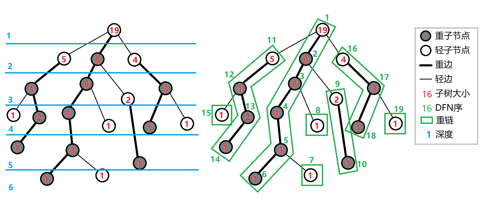

Hld
引入
树链剖分用于将树分割成若干条链的形式，以维护树上路径的信息．
具体来说，将整棵树剖分为若干条链，使它组合成线性结构，然后用其他的数据结构维护信息．
树链剖分（树剖/链剖）有多种形式，如 重链剖分，长链剖分 和用于 Link/cut Tree 的剖分（有时被称作「实链剖分」）．大多数情况下（没有特别说明时），「树链剖分」都指「重链剖分」．
重链剖分可以将树上的任意一条路径划分成不超过 $O(\log n)$ 条连续的链，每条链上的点深度互不相同（即是自底向上的一条链，链上所有点的 LCA 为链的一个端点）．
重链剖分还能保证划分出的每条链上的结点 DFS 序连续，因此可以方便地用一些维护序列的数据结构（如线段树）来维护树上路径的信息．例如：
- 修改 树上两点之间的路径上 所有点的值．
- 查询 树上两点之间的路径上 结点权值的 和/极值/其它（在序列上可以用数据结构维护，便于合并的信息）．
除了配合数据结构来维护树上路径信息，树剖还可以用来 $O(\log n)$（且常数较小）地求 LCA．在某些题目中，还可以利用其性质来灵活地运用树剖．
重链剖分
我们给出一些定义：
定义 重子结点 表示其子结点中子树最大的子结点．如果有多个子树最大的子结点，取其一．如果没有子结点，就无重子结点．
定义 轻子结点 表示剩余的所有子结点．
从这个结点到重子结点的边为 重边．
到其他轻子结点的边为 轻边．
若干条首尾衔接的重边构成 重链．
把落单的结点也当作重链，那么整棵树就被剖分成若干条重链．
如图：

实现
树剖的实现分两个 DFS 的过程．伪代码如下：
第一个 DFS 记录每个结点的父结点（$\textit{father}$）、深度（$\textit{depth}$）、子树大小（$\textit{size}$）、重子结点（$\textit{hson}$）．
$$ \begin{array}{l} \text{TREE-BUILD }(u,\textit{dep}) \ \begin{array}{ll} 1 & u.\textit{hson}\gets 0 \ 2 & u.\textit{hson}.\textit{size}\gets 0 \ 3 & u.\textit{depth}\gets \textit{dep} \ 4 & u.\textit{size}\gets 1 \ 5 & \textbf{for }\text{each son }v\text{ of }u \ 6 & \qquad u.\textit{size}\gets u.\textit{size} + \text{TREE-BUILD }(v,\textit{dep}+1) \ 7 & \qquad v.\textit{father}\gets u \ 8 & \qquad \textbf{if }v.\textit{size}> u.\textit{hson}.\textit{size} \ 9 & \qquad \qquad u.\textit{hson}\gets v \ 10 & \textbf{return } u.\textit{size} \end{array} \end{array} $$
第二个 DFS 记录所在链的链顶（$\textit{top}$，应初始化为结点本身）、重边优先遍历时的 DFS 序（$\textit{dfn}$）、DFS 序对应的结点编号（$\textit{rank}$）．
$$ \begin{array}{l} \text{TREE-DECOMPOSITION }(u,\textit{top}) \ \begin{array}{ll} 1 & u.\textit{top}\gets \textit{top} \ 2 & \textit{tot}\gets \textit{tot}+1\ 3 & u.\textit{dfn}\gets \textit{tot} \ 4 & \textit{rank}(\textit{tot})\gets u \ 5 & \textbf{if }u.\textit{hson}\text{ is not }0 \ 6 & \qquad \text{TREE-DECOMPOSITION }(u.\textit{hson},\textit{top}) \ 7 & \qquad \textbf{for }\text{each son }v\text{ of }u \ 8 & \qquad \qquad \textbf{if }v\text{ is not }u.\textit{hson} \ 9 & \qquad \qquad \qquad \text{TREE-DECOMPOSITION }(v,v) \end{array} \end{array} $$
以下为代码实现．
我们先给出一些定义：
- $\operatorname{fa}(x)$ 表示结点 $x$ 在树上的父亲．
- $\operatorname{dep}(x)$ 表示结点 $x$ 在树上的深度．
- $\operatorname{siz}(x)$ 表示结点 $x$ 的子树的结点个数．
- $\operatorname{son}(x)$ 表示结点 $x$ 的 重儿子．
- $\operatorname{top}(x)$ 表示结点 $x$ 所在 重链 的顶部结点（深度最小）．
- $\operatorname{dfn}(x)$ 表示结点 $x$ 的 DFS 序，也是其在线段树中的编号．
- $\operatorname{rnk}(x)$ 表示 DFS 序所对应的结点编号，有 $\operatorname{rnk}(\operatorname{dfn}(x))=x$．
我们进行两遍 DFS 预处理出这些值，其中第一次 DFS 求出 $\operatorname{fa}(x)$，$\operatorname{dep}(x)$，$\operatorname{siz}(x)$，$\operatorname{son}(x)$，第二次 DFS 求出 $\operatorname{top}(x)$，$\operatorname{dfn}(x)$，$\operatorname{rnk}(x)$．
void dfs1(int u, int f) {
fa[u] = f, dep[u] = dep[f] + 1, siz[u] = 1;
for (auto v : G[u]) {
if (v == f) continue;
dfs1(v, u);
siz[u] += siz[v];
if (siz[v] > siz[son[u]]) son[u] = v;
}
}
void dfs2(int u, int ftop) {
top[u] = ftop, dfn[u] = ++idx, rnk[idx] = u;
if (son[u]) dfs2(son[u], ftop);
for (auto v : G[u])
if (v != son[u] && v != fa[u]) dfs2(v, v);
}
重链剖分的性质
树上每个结点都属于且仅属于一条重链．
重链开头的结点一定不是重子结点（因为重链开头的结点要么是根，要么是其父亲结点的轻子结点）．
所有的重链将整棵树 完全剖分．
在剖分时 重边优先遍历，最后树的 DFS 序上，重链内的 DFS 序是连续的．按 DFN 排序后的序列即为剖分后的链．
一棵子树内的 DFS 序是连续的．
可以发现，当我们向下经过一条 轻边 时，所在子树的大小至少会除以二．
因此，对于树上的任意一条路径，把它拆分成从 LCA 分别向两边往下走，分别最多走 $O(\log n)$ 次，因此，树上的每条路径都可以被拆分成不超过 $O(\log n)$ 条重链．
??? info "怎么有理有据地卡树剖" 一般情况下树剖的 $O(\log n)$ 常数不满很难卡，如果要卡只能建立二叉树深度低．
于是我们可以考虑折中方案．
我们建立一棵 $\sqrt{n}$ 个结点的二叉树．对于每个结点到其儿子的边，我们将其替换成一条长度为 $\sqrt{n}$ 的链．
这样子我们可以将随机询问轻重链切换次数卡到平均 $\frac{\log n}{2}$ 次，同时有 $O(\sqrt{n} \log n)$ 的深度．
加上若干随机叶子看上去可以卡树剖．但是树剖常数小有可能卡不掉．
常见应用
路径上维护
用树链剖分求树上两点路径权值和，伪代码如下：
$$ \begin{array}{l} \text{TREE-PATH-SUM }(u,v) \ \begin{array}{ll} 1 & \textit{tot}\gets 0 \ 2 & \textbf{while }u.\textit{top}\text{ is not }v.\textit{top} \ 3 & \qquad \textbf{if }u.\textit{top}.\textit{depth}< v.\textit{top}.\textit{depth} \ 4 & \qquad \qquad \text{SWAP}(u, v) \ 5 & \qquad \textit{tot}\gets \textit{tot} + \text{sum of values between }u\text{ and }u.\textit{top} \ 6 & \qquad u\gets u.\textit{top}.\textit{father} \ 7 & \textit{tot}\gets \textit{tot} + \text{sum of values between }u\text{ and }v \ 8 & \textbf{return } \textit{tot} \end{array} \end{array} $$
链上的 DFS 序是连续的，可以使用线段树、树状数组维护．
每次选择深度较大的链往上跳，直到两点在同一条链上．
同样的跳链结构适用于维护、统计路径上的其他信息．
子树维护
有时会要求，维护子树上的信息，譬如将以 $x$ 为根的子树的所有结点的权值增加 $v$．
在 DFS 搜索的时候，子树中的结点的 DFS 序是连续的．
每一个结点记录 bottom 表示所在子树连续区间末端的结点．
这样就把子树信息转化为连续的一段区间信息．
求最近公共祖先
不断向上跳重链，当跳到同一条重链上时，深度较小的结点即为 LCA．
向上跳重链时需要先跳所在重链顶端深度较大的那个．
参考代码：
int lca(int u, int v) {
while (top[u] != top[v]) {
if (dep[top[u]] > dep[top[v]])
u = fa[top[u]];
else
v = fa[top[v]];
}
return dep[u] > dep[v] ? v : u;
}
换根操作
考虑一类新的问题：除了树链剖分支持的基本操作外，加上了换根操作．
由于树链剖分维护的信息是静态的，不支持动态修改．同时，不可能每次换根后重新预处理信息，复杂度过高．那么，需要充分利用之前得到的信息来帮助解决换根操作．
对于路径修改和查询操作，由于树上两点之间的简单路径唯一，所以不会发生变化，与正常的处理方式相同．
对于子树修改和查询操作，一般的思路就是将换根后的子树映射到原来的子树．这需要分类讨论操作子树的根结点、换根后的整个树的根结点，以及原来树的根结点的相对位置关系．具体细节详见 后文例题．
例题
本文通过例题展示如何应用重链剖分．首先是一道模板题．
???+ example "「ZJOI2008」树的统计" 对一棵有 $n$ 个结点，结点带权值的静态树，进行三种操作共 $q$ 次：
1. 修改单个结点的权值；
2. 查询 $u$ 到 $v$ 的路径上的最大权值；
3. 查询 $u$ 到 $v$ 的路径上的权值之和．
保证 $1\le n\le 30000$，$0\le q\le 200000$．
??? note "解答" 根据题面以及前文所述性质，线段树需要维护三种操作：
1. 单点修改；
2. 区间查询最大值；
3. 区间查询和．
单点修改很容易实现．
由于子树的 DFS 序连续（无论是否树剖都是如此），修改一个结点的子树只用修改这一段连续的 DFS 序区间．
问题是如何修改/查询两个结点之间的路径．
考虑我们是如何用 **倍增法求解 LCA** 的．首先我们 **将两个结点提到同一高度，然后将两个结点一起向上跳**．对于树链剖分也可以使用这样的思想．
在向上跳的过程中，如果当前结点在重链上，向上跳到重链顶端，如果当前结点不在重链上，向上跳一个结点．如此直到两结点相同．沿途更新/查询区间信息．
对于每个询问，最多经过 $O(\log n)$ 条重链，每条重链上线段树的复杂度为 $O(\log n)$，因此总时间复杂度为 $O(n\log n+q\log^2 n)$．实际上重链个数很难达到 $O(\log n)$（可以用完全二叉树卡满），所以树剖在一般情况下常数较小．
??? note "参考代码"
cpp
--8<-- "docs/graph/code/hld/hld_1.cpp"
然后是一道带换根操作的重链剖分模板题．
???+ example "LOJ 139. 树链剖分" 给定一棵 $n$ 个结点的树（初始根结点为 $1$），要求支持如下的 $m$ 次操作：
- 换根，将结点 $u$ 设为新的树根．
- 修改路径上结点权值，将结点 $u$ 和结点 $v$ 之间路径上的所有结点（包括这两个结点）的权值增加 $w$．
- 修改子树上结点权值，将以结点 $u$ 为根的子树上的所有结点的权值增加 $w$．
- 询问路径，询问结点 $u$ 和结点 $v$ 之间路径上的所有结点（包括这两个结点）的权值和．
- 询问子树，询问以结点 $u$ 为根的子树上的所有结点的权值和．
$1 \le n,m \le 10^5$．
??? note "解法" 先以 $1$ 作为根结点跑 DFS，预处理出树链剖分所必需的信息．为方便表述，称以 $1$ 为根结点的树为「原始树」，而称经历了若干次换根操作之后的树为「当前树」．在操作过程中，需要维护 $\textit{root}$ 为当前树的根结点．由于线段树中存储的是原始树的 DFS 序的信息，所以每次查询和修改时，都需要将当前树的查询和修改操作转换到原始树上．
对于换根操作，我们直接令 $\textit{root}\gets u$．对于路径操作，由于换根不影响路径，所以直接在原始树上做对应操作即可．
重点考虑操作子树的问题．我们根据 $u$ 和 $\textit{root}$ 的相对位置关系做分类讨论：
- $u = \textit{root}$：这是最特殊的情况，相当于对整棵树做操作．为此，直接对线段树的根结点打上标记或查询答案即可．
- $u$ 是 $\textit{root}$ 在原始树上的祖先，即 $u$ 位于 $1$ 到 $\textit{root}$ 的简单路径上．
这是最值得注意的情况．定义 $v$ 为原始树上 $u$ 到 $\textit{root}$ 的简单路径上除 $u$ 以外的深度最小的点，可以发现原始树上 $v$ 及其子树以外的部分恰好是当前树上 $u$ 及其子树．
考虑如何高效找到 $v$．我们先令 $v\gets\textit{root}$，然后沿着重链往上跳直到 $\operatorname{dep}(\operatorname{top}(v))\le\operatorname{dep}(u)+1$．
- 若 $\operatorname{dep}(\operatorname{top}(v))=\operatorname{dep}(u)+1$，令 $v\gets\operatorname{top}(v)$．此时，$v$ 是 $u$ 的一个轻儿子．
- 若 $\operatorname{dep}(\operatorname{top}(v))<\operatorname{dep}(u)+1$，亦即 $\operatorname{dep}(\operatorname{top}(v))\le \operatorname{dep}(u)$，这说明 $u,v$ 处在同一条重链上．根据同一条重链上 DFS 序连续的性质，所求的 $v$ 必然满足 $\operatorname{dfn}(v)=\operatorname{dfn}(u)+1$．所以，可以令 $v\gets\operatorname{rnk}(\operatorname{dfn}(u)+1)$．
注意，这两种情形中可以合并：在跳完之后可以直接令
$$
v\gets\operatorname{rnk}(\operatorname{dfn}(\operatorname{top}(v))+\operatorname{dep}(u)+1-\operatorname{dep}(\operatorname{top}(v))).
$$
容易验证，利用这一表达式找到的 $v$，和分类讨论找到的 $v$ 是等价的．参考实现中就用到了这一表达式．
由于 $v$ 子树覆盖的区间为 $[\operatorname{dfn}(v),\operatorname{dfn}(v)+\operatorname{siz}(v))$，所以只需要对 $[1,\operatorname{dfn}(v))\cup[\operatorname{dfn}(v)+\operatorname{siz}(v),n]$ 操作即可．
- 其它情况．可以发现换根操作不会影响 $u$ 的子树，用正常的方式维护即可．
这样做的复杂度与不带换根的做法相同，均为 $O(n\log^2 n)$．
??? note "参考代码"
cpp
--8<-- "docs/graph/code/hld/hld_4.cpp"
最后是一道交互题，也是树剖的非传统应用．
???+ example "Nauuo and Binary Tree" 有一棵以 $1$ 为根的二叉树，你可以询问任意两点之间的距离，求出每个点的父亲．
结点数不超过 $3000$，你最多可以进行 $30000$ 次询问．
??? note "解法" 首先可以通过 $n-1$ 次询问确定每个结点的深度．
然后考虑按深度从小到大确定每个结点的父亲，这样的话确定一个结点的父亲时其所有祖先一定都是已知的．
确定一个结点的父亲之前，先对树已知的部分进行重链剖分．
假设我们需要在子树 $u$ 中找结点 $k$ 所在的位置，我们可以询问 $k$ 与 $u$ 所在重链的尾端的距离，就可以进一步确定 $k$ 的位置，具体见图：

其中红色虚线是一条重链，$d$ 是询问的结果即 $\textit{dis}(k, \textit{bot}(u))$，$v$ 的深度为 $(\textit{dep}(k)+\textit{dep}(\textit{bot}(u))-d)/2$．
这样的话，如果 $v$ 只有一个儿子，$k$ 的父亲就是 $v$，否则可以递归地在 $w$ 的子树中找 $k$ 的父亲．
时间复杂度 $O(n^2)$，询问复杂度 $O(n\log n)$．
具体地，设 $T(n)$ 为最坏情况下在一棵大小为 $n$ 的树中找到一个新结点的位置所需的询问次数，可以得到：
$$
T(n)\le
\begin{cases}
0&n=1\\
T\left(\left\lfloor\frac{n-1}2\right\rfloor\right)+1&n\ge2
\end{cases}
$$
$2999+\sum_{i=1}^{2999}T(i)\le 29940$，事实上这个上界是可以通过构造数据达到的，然而只要进行一些随机扰动（如对深度进行排序时使用不稳定的排序算法），询问次数很难超过 $21000$ 次．
??? note "参考代码"
cpp
--8<-- "docs/graph/code/hld/hld_2.cpp"
长链剖分
长链剖分本质上就是另外一种链剖分方式．
定义 重子结点 表示其子结点中子树深度最大的子结点．如果有多个子树最大的子结点，取其一．如果没有子结点，就无重子结点．
定义 轻子结点 表示剩余的子结点．
从这个结点到重子结点的边为 重边．
到其他轻子结点的边为 轻边．
若干条首尾衔接的重边构成 重链．
把落单的结点也当作重链，那么整棵树就被剖分成若干条重链．
如图（这种剖分方式既可以看成重链剖分也可以看成长链剖分）：
长链剖分实现方式和重链剖分类似，这里就不再展开．
常见应用
首先，我们发现长链剖分从一个结点到根的路径的轻边切换条数是 $\sqrt{n}$ 级别的．
??? info "如何构造数据将轻重边切换次数卡满" 我们可以构造这么一棵二叉树 T：
假设构造的二叉树参数为 $D$．
若 $D \neq 0$, 则在左儿子构造一棵参数为 $D-1$ 的二叉树，在右儿子构造一个长度为 $2D-1$ 的链．
若 $D = 0$, 则我们可以直接构造一个单独叶结点，并且结束调用．
这样子构造一定可以将单独叶结点到根的路径全部为轻边且需要 $D^2$ 级别的结点数．
取 $D=\sqrt{n}$ 即可．
长链剖分优化 DP
一般情况下可以使用长链剖分来优化的 DP 会有一维状态为深度维．
我们可以考虑使用长链剖分优化树上 DP．
具体的，我们每个结点的状态直接继承其重儿子的结点状态，同时将轻儿子的 DP 状态暴力合并．
???+ example "Codeforces 1009 F. Dominant Indices" 给定一棵有 $n$ 个顶点的有根树，以顶点 $1$ 作为根．
定义顶点 $x$ 的深度数组为一个无限序列 $[d_{x, 0}, d_{x, 1}, d_{x, 2}, \dots]$，其中 $d_{x, i}$ 表示满足以下两个条件的顶点 $y$ 的数量：
- $x$ 是 $y$ 的祖先；
- 从 $x$ 到 $y$ 的简单路径恰好经过 $i$ 条边．
顶点 $x$ 的深度数组的主导下标（dominant index）（简称顶点 $x$ 的主导下标）定义为一个下标 $j$，满足：
- 对于所有 $k < j$，都有 $d_{x, k} < d_{x, j}$；
- 对于所有 $k > j$，都有 $d_{x, k} \le d_{x, j}$．
请计算树中每个顶点的主导下标．
??? note "解答" 我们设 $f_{i,j}$ 表示在子树 i 内，和 i 距离为 j 的点数．
直接暴力转移时间复杂度为 $O(n^2)$
我们考虑每次转移我们直接继承重儿子的 DP 数组和答案，并且考虑在此基础上进行更新．
首先我们需要将重儿子的 DP 数组前面插入一个元素 1, 这代表着当前结点．
然后我们将所有轻儿子的 DP 数组暴力和当前结点的 DP 数组合并．
注意到因为轻儿子的 DP 数组长度为轻儿子所在重链长度，而所有重链长度和为 $n$．
也就是说，我们直接暴力合并轻儿子的总时间复杂度为 $O(n)$．
??? note "参考代码"
cpp
--8<-- "docs/graph/code/hld/hld_3.cpp"
注意，一般情况下 DP 数组的内存分配为一条重链整体分配内存，链上不同的结点有不同的首位置指针．
DP 数组的长度我们可以根据子树最深结点算出．
当然长链剖分优化 DP 技巧非常多，包括但是不仅限于打标记等等．这里不再展开．
参考 租酥雨的博客．
长链剖分求 k 级祖先
即询问一个点向父亲跳 $k$ 次跳到的结点．
首先我们假设我们已经预处理了每一个结点的 $2^i$ 级祖先．
现在我们假设我们找到了询问结点的 $2^i$ 级祖先满足 $2^i \le k < 2^{i+1}$．
我们考虑求出其所在重链的结点并且按照深度列入表格．假设重链长度为 $d$．
同时我们在预处理的时候找到每条重链的根结点的 $1$ 到 $d$ 级祖先，同样放入表格．
根据长链剖分的性质，$k-2^i \le 2^i \leq d$, 也就是说，我们可以 $O(1)$ 在这条重链的表格上求出的这个结点的 $k$ 级祖先．
预处理需要倍增出 $2^i$ 次级祖先，同时需要预处理每条重链对应的表格．
预处理复杂度 $O(n\log n)$, 询问复杂度 $O(1)$．
习题
- 「洛谷 P3379」【模板】最近公共祖先（LCA）（树剖求 LCA 无需数据结构，可以用作练习）
- 「JLOI2014」松鼠的新家（当然也可以用树上差分）
- 「HAOI2015」树上操作
- 「洛谷 P3384」【模板】重链剖分/树链剖分
- 「洛谷 P1505」[国家集训队] 旅游
- 「NOI2015」软件包管理器
- 「SDOI2011」染色
- 「SDOI2014」旅行
- 「洛谷 P3979」遥远的国度
- 「POI2014」Hotel 加强版（长链剖分优化 DP）
- 攻略（长链剖分优化贪心）